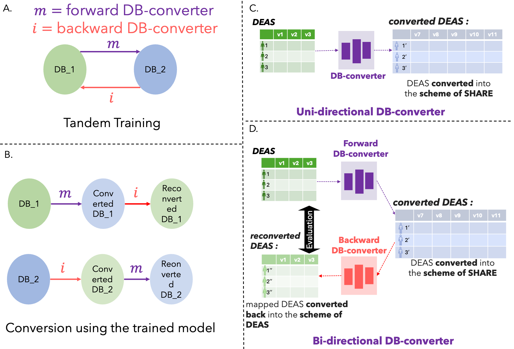

Non-overlapping conversion
Trains without linked samples, shared participant identifiers, or paired records. The assumption is that both cohorts measure the same or interconvertible underlying reality.
Self-supervised database converter
Converts an incompatible cohort into a compatible, integrable one.
A category-theory-inspired, self-supervised framework that converts the schema of one tabular health-data cohort into that of another without requiring linked individuals across the two cohorts as ground-truth.
Imagine you have two datasets. They use different scales, instruments, or questionnaires, but they are trying to measure the same thing. Wouldn't it be great if you could convert one into another and use it for downstream analysis? DB-converter tries to do that without requiring any linked participants or one-to-one ground-truth pairs.
git clone https://github.com/Mycheaux/db-conv-auto.git

Cite us
Das et al. Self-supervised generative deep learning enables the conversion of non-overlapping tabular health data cohorts. Under review.
What it does
Trains without linked samples, shared participant identifiers, or paired records. The assumption is that both cohorts measure the same or interconvertible underlying reality.
The forward converter maps source features into the target schema. The backward converter reverses the feature dimensions, and the two networks train in tandem through converted and reconverted samples.
The method is designed to preserve local neighborhoods, global distributions, and downstream task utility so converted cohorts can support model transfer and larger integrated training sets.
For new data, the essential requirement is simple: the mapper input and output match the two cohort dimensions, while the inverter reverses those dimensions. Hidden layers can be adapted to the data modality.
Start
Clone the repository, create the Python environment, prepare the config files, and run
training with python3 main.py. Use python3 inference.py after
a trained checkpoint exists.
Provide complete numerical feature matrices for both cohorts, min-max normalize them,
split them into train, validation, and test sets, and point config/data_path.yaml
to the prepared arrays.
Match config/architecture.yaml and src/model.py to the real
data dimensions. The mapper converts cohort A to cohort B; the inverter converts cohort
B back to cohort A.
Notebook option
The repository includes a Google Colab workflow in the notebook archive. Use it for a lower-friction experiment, especially when you want to test the DB-converter idea before setting up a full local environment.
For custom cohorts, bring your own numerical, normalized, split data and adapt the mapper and inverter dimensions just as you would in the local repository.
Gen2 agentic automatisation
Once the repository is downloaded locally, open it in Codex or Claude. The repo includes agent startup files so the agent can recognize project commands.
!build_custom_NN
Create mapper and inverter architectures from the actual cohort dimensions.
!run_feature_selection
Beta, expert-guided variable suggestion from cohort documentation.
!build_preprocessed_data
Build normalized preprocessed data from the reviewed feature-selection form.
The feature-selection workflow is human-in-the-loop. The variables left in the reviewed form are the variables the agent should use.